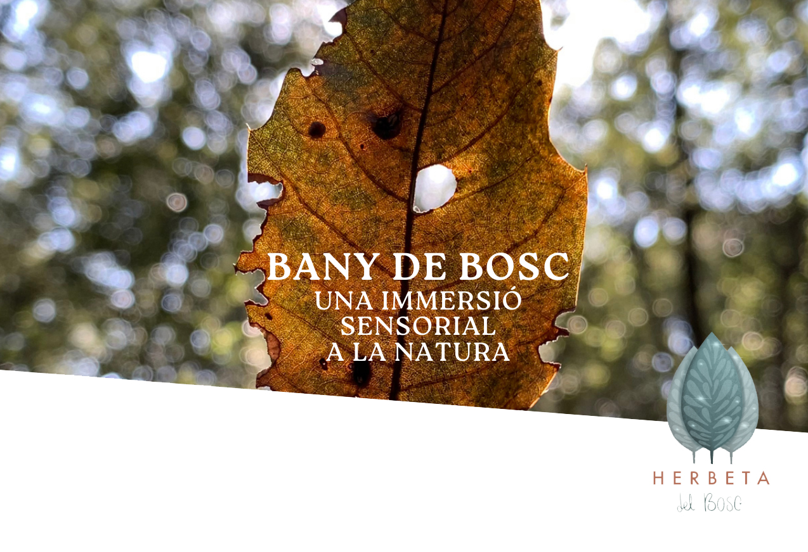
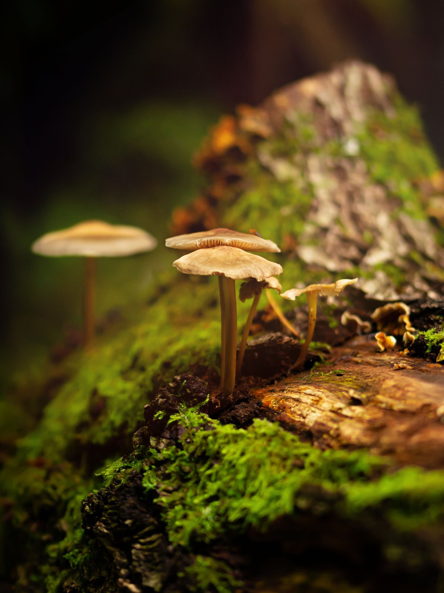
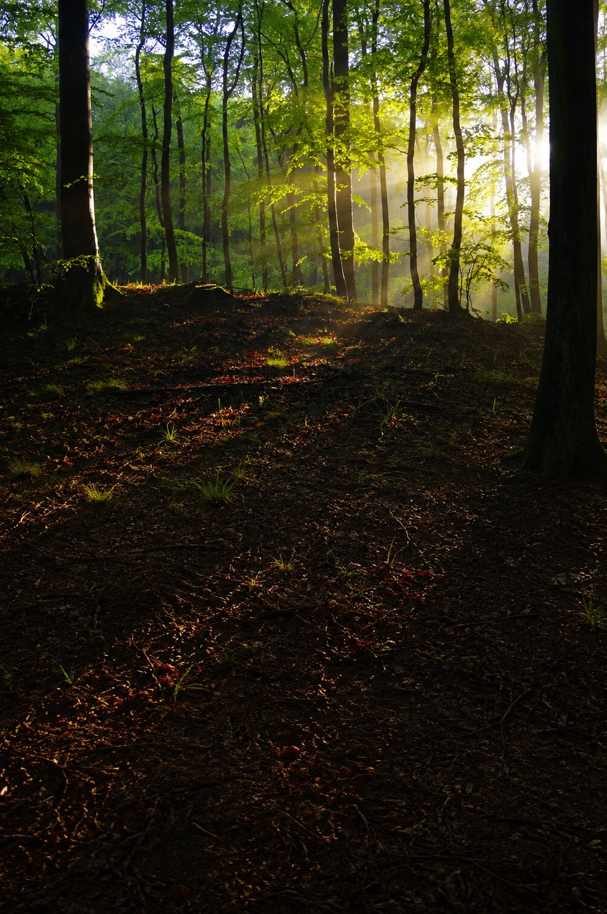
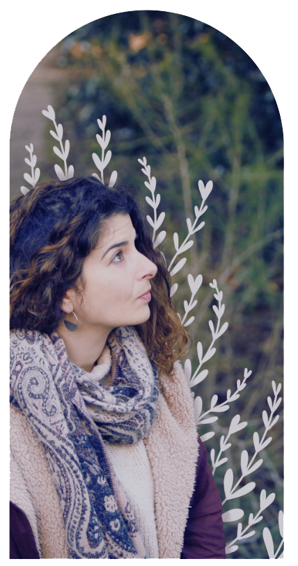
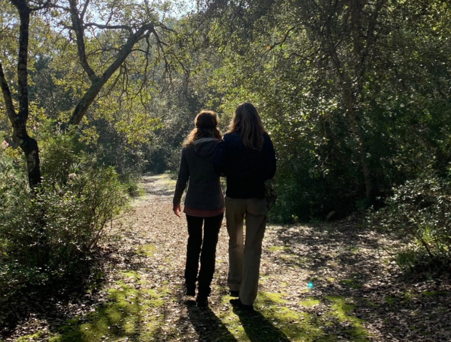
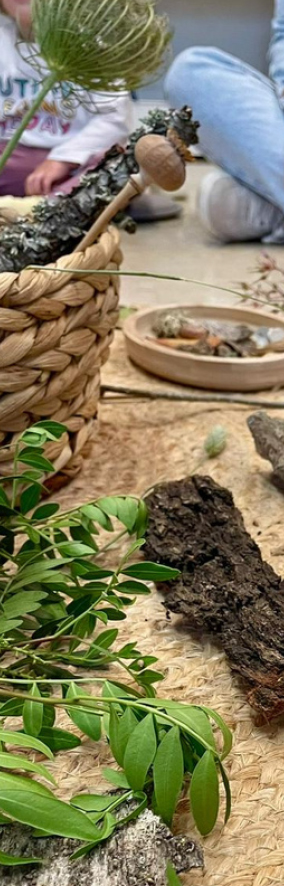

Herbeta del Bosc
Banys de bosc · Shinrin-yoku
Mallorca
Cultivant vincles amb la natura
Aturar el ritme i tornar a sentir-nos part del món viu
Experiències guiades a la natura de Mallorca: banys de bosc, educació ambiental i propostes creatives per reconnectar amb l'entorn a través dels sentits.
Què és
Un bany de bosc no és una excursió
És una pràctica de benestar a la natura, originària del Japó (shinrin-yoku), que convida a viure el bosc de manera conscient i pausada.
No es tracta de caminar per fer quilòmetres, sinó d'aturar el ritme, activar els sentits i deixar-se acompanyar pel que ofereix l'entorn natural. Passejam molt lent, amb petites invitacions sensorials: observar, escoltar, tocar, respirar.
No és una excursió ni una activitat esportiva, sinó una experiència de presència i calma. No cal experiència prèvia ni cap condició física especial.

Modalitats
01 — 05
Adaptam cada bany a les persones i al context
Cinc enfocaments, un mateix ritme pausat.
Taula IModalitats de bany de bosc
Agenda
Activitats obertes
Properes activitats
Places limitades. Escriu-nos i confirmam la teva plaça per correu.
Les places es confirmen per correu i el pagament es fa per Bizum o transferència abans de l'activitat. Si una data és plena, t'avisam de la següent.

Per a qui
Cada grup necessita un acompanyament diferent
Botiga
Fet a mà a Mallorca
El bosc, dibuixat a mà
Il·lustració botànica original de na Malena: postals, làmines, quadres, bosses i quaderns de camp. Peces úniques o de tirada curta.
Comandes per encàrrec: escriu-nos amb la peça que t'interessa i t'enviam disponibilitat, ports i forma de pagament (Bizum o transferència). Recollida a Mallorca o enviament a península.
Qui som

Na Malena Bibiloni Amorós
Herbeta del Bosc neix del meu camí vital, com una manera d'honrar la bellesa del món natural i compartir espais de connexió i escolta profunda amb les persones i la natura.
Durant nou anys he estat educadora ambiental al MUCBO | Jardí Botànic de Sóller, on he acompanyat milers d'infants i joves a descobrir el món vegetal i a estimar la natura des de la vivència.
- Biòloga
- Educadora ambiental
- Guia certificada de banys de bosc i teràpia de bosc
- Il·lustradora botànica
Han confiat en el projecte

A mida
Vols organitzar un bany de bosc a mida?
Per a famílies, celebracions, grups d'amigues, empreses, agroturismes o entitats. Conversam primer i dissenyam la proposta segons el grup i l'espai.
Parlem-ne →Contacte
Explica'ns què tens al cap
Responem en 24–48 h amb una proposta i un pressupost sense compromís.
Programa
Curs 2026 – 27
Per a escoles, ajuntaments i entitats
Programa educatiu i vivencial a la natura
Activitats d'educació ambiental i banys de bosc adaptats a l'àmbit educatiu, amb una conversa prèvia per dissenyar la proposta a la realitat de cada centre.

Enfocament
El vincle amb la natura es cultiva, no s'explica
Per això dissenyam experiències vivencials que obren tres portes d'entrada al món natural.
Activitats
Sis propostes
Les nostres activitats
Totes s'adapten a l'edat, als objectius pedagògics i a l'horari del centre.
Activitat central
El bany de bosc escolar
Adaptats a l'àmbit educatiu, ofereixen als infants i joves una vivència significativa que combina l'observació, el silenci, la creativitat i l'escolta activa. Complementen l'educació ambiental tradicional i afavoreixen aprenentatges profunds a nivell emocional, sensorial i social.
On el feim: sortida a la natura · espais verds propers al centre · pati o jardí del centre. Amb opció d'ampliar l'experiència amb una introducció al diari de natura.
Currículum
LOMLOE · ODS
Una proposta que connecta amb el currículum
La nostra proposta pot afavorir competències clau segons la LOMLOE i els Objectius de Desenvolupament Sostenible.
Competències clau
ODS que es poden treballar
Equips
Banys de bosc per a qui cuida
Els qui acompanyen infants i joves dia a dia necessiten també espais per aturar-se, respirar i reconnectar. Oferim banys de bosc adreçats a equips professionals: docents, educadors, treballadors socials, sanitaris.
Un espai profundament respectuós que convida a recuperar la calma, escoltar-se i tornar a trobar el sentit de la tasca quotidiana.
Què treballam
Benestar emocional i gestió del ritme quotidià · Cohesió d'equip i escolta entre companys · Reconnexió amb el sentit profund de la tasca · Recuperar la mirada curiosa del món natural.
Formats
Activitat puntual de 2 a 3 hores, adaptable a qualsevol entorn amb natura i tranquil·litat. Com a jornada de benestar, team building o formació vivencial. Ideal per a inicis o finals de curs i jornades pedagògiques.
Formats i preus
Durades i preus orientatius
Consultau disponibilitat i pressupost sense compromís. Oferim descomptes per a programes de més d'una sessió o cicles trimestrals.
| Format | Durada | Preu orientatiu |
|---|---|---|
| Activitats de taller | 1h – 1h 30 | 120 – 200 € |
| Banys de bosc i activitats amb sortida | 1h 30 – 2h | 150 – 280 € |
| Sessions per a equips docents | 2h – 3h | 250 – 350 € |
| Cicle trimestral (3 sessions) | a convenir | amb descompte |
Els banys de bosc escolars comencen a partir de 150 € per grup de fins a 25 alumnes. El preu final depèn del format, la durada, els materials inclosos i el desplaçament.
Preguntes freqüents
Preguntes freqüents
Cita
“El sentit de la meravella hauria de conservar-se tota la vida, però comença en la infància.”Rachel Carson
Sol·licitud
Sol·licita una activitat per al teu centre
Ens posam en contacte per conèixer el context i dissenyar una proposta adequada, sense compromís.